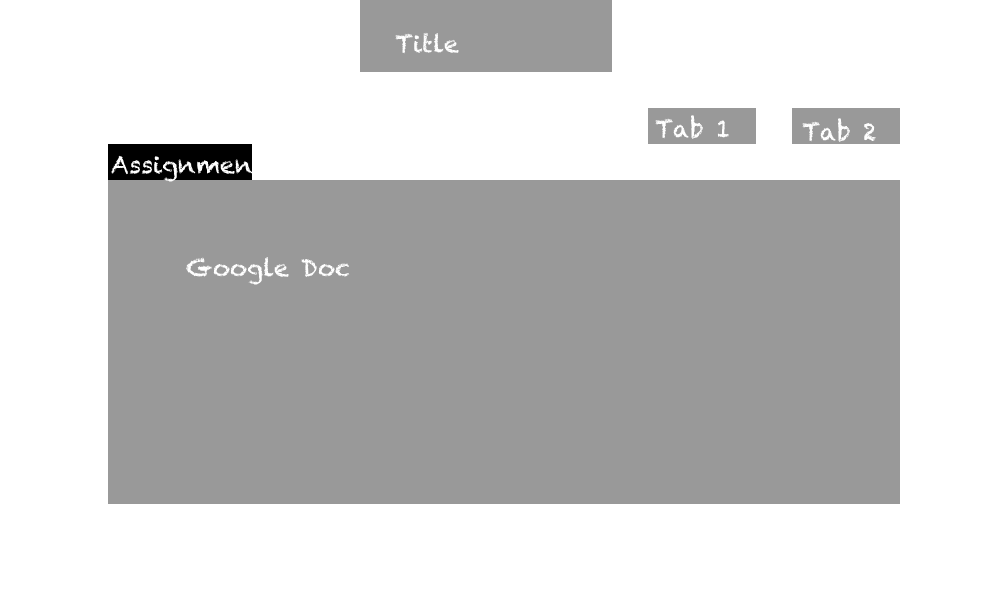

Brainstorm
- Website for Biology help
- Website for basketball shoes from Nike
- A website for selling a product
- A peer tutoring website
Choosing
Â
- To help choose a pair of basketball shoes for students at AIS
- AIS
- Basketball Shoes from Nike
- Stores in Hong Kong
- Prices in HKD
- Client, KEvin Wong has been looking for a new pair of basketball shoes
- TO become more specific, because I have ben to those stores
Chosen One, Textbook answers with working out
Why?
- Students in school only have odd numbered questions
- They don't have working out, so it will be very useful for AIS students
- Students will be able to use this website to check their answers, and to see the wroking out
- The studenrts now only have the answers in their textbooks of the odd numbers with no working out
- So this website will show odd and even numbered questions, with the working out, students willl be able to learn from their mistakes and learn how to do it
Our Goals
- We want this website to be a PDF viewer website
- This website will show the working out of all the Math textbook used in the AIS highschool
- We want to make the website show all the pages, and the user can search for a specific page on their specific textbook
- To make it easy for student to access and easy for them to navigate
- The website will have a search bar, the user will be able to look for their textbook and look for the specific page number
-
Objective
- Get the PDF from the teachers at AIS
- For when students get stuck with their Math work. We want to help them solve their problem with working out
-
After Meeting with Client Mr. Kang
- There is already an existing website that showed all the answers for the math textbooks
- Our client suggested that we make a quiz website to test the student by giving them questions and then telling them which one is right and wrong
- This website will be a quiz about the Algebra 3, Chapter 14.
New Objectives
- For students in Mr. Kang's ALgebra 3 class struggling in Chapter 14, Algebra 3, to use this website as a learning resource to help them with their test.
- For Mr. Kang to use this website for his students and to not have to upload worksheets and quizzes on to moodle.
- For other people around school to use this website as a resource to study about the chapter and be more prepared.
FINAL Idea
- To make a website for yearbook and photography club
- This website is for the students, they can be reminded of their assignments that they need to complete
- This website will show the latest news and updates for the people in yearbook and phtography club
- To show students in the yearbook and photography club good and bad examples of photography
- This website will be just an informational website for the people in the yearbook and the photography club
Client
- Our Client will be Mr. Leung
Audience
- Our audience will be the people in the photography and the yearbook club
Objectives
- For students in the yearbook and photography club in AIS to be able to check this website for the latest notifications of their assignments
Success Criteria
- To show the latest news and assignments for the yearbook and photography club
- THe students in these clubs actually use this site
here
Flowcharts


Wireframes

Storyboard